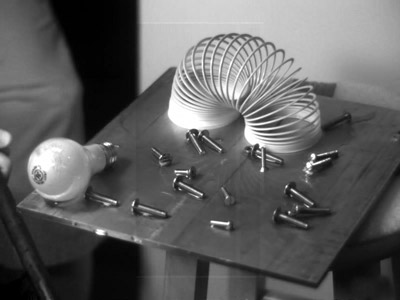

Introduction
Here are some movies that Tom and Mike made with a high-speed video
camera in Mike's mechanical engineering laboratory. Most of these
videos are 3000–4000 frames per second, which means that the
action happens about 250 times slower than real time.
Movies
| tom-guitar.avi
This one was taken at 5000 frames per second, so you see guitar strumming about 416 times slower than real time. I was hitting the strings really hard and it was tuned down a step or two, but strings really do wobble this much!
|
| tom-dragonfist.avi
Here's a nice one of Tom's Dragon Fist technique, which can pulverize any salted cracker! (This really hurt.)
|
| tom-sprite.avi
Tom shaking a bottle of sprite and releasing the pressure. Keep in mind that the entire video takes place in less than a second. We created quite a mess.
|
|  | waterplate2.avi
This was towards the end of the evening when we thought we'd have to return the camera soon, so we just put a bunch of stuff on an aluminum plate and smacked it with a steel rod.
|
| bulbdrop.avi
This is the last video we
shot. Synchronizing the camera (which can only record for about a second)
with the destruction is always tricky, but we did really well on this
one and also the video is not quite what you think it is.
|
Watching the Movies
To watch these movies you will need the free, open source XviD codec. If you're using Windows, I
recommend Media
Player Classic as your movie player for its simplicity.
Back to Tom's Web Page.
|